A Quarter Century of Multilevel Models in Social Epidemiology
A Short Story in Three Acts
2023-06-14
Why multilevel social epidemiology?
Place-based comparisons of health are revealing (Villermé, Farr, Graunt, Snow, DuBois, many others)
Communities inherently reflect social dynamics.
Host-Agent-Environment (physical and social).
“Population perspective”, contra biomedical individualism.

- Multilevel methods from demography (Entwistle), statistics (Wong/Mason), education (Bryk/Raudenbush).
- Critical need for theory.
The development of multi-level approaches in epidemiologic research may facilitate research which elucidates the independent and joint effects of individual and environmental factors on health behaviors and health outcomes.
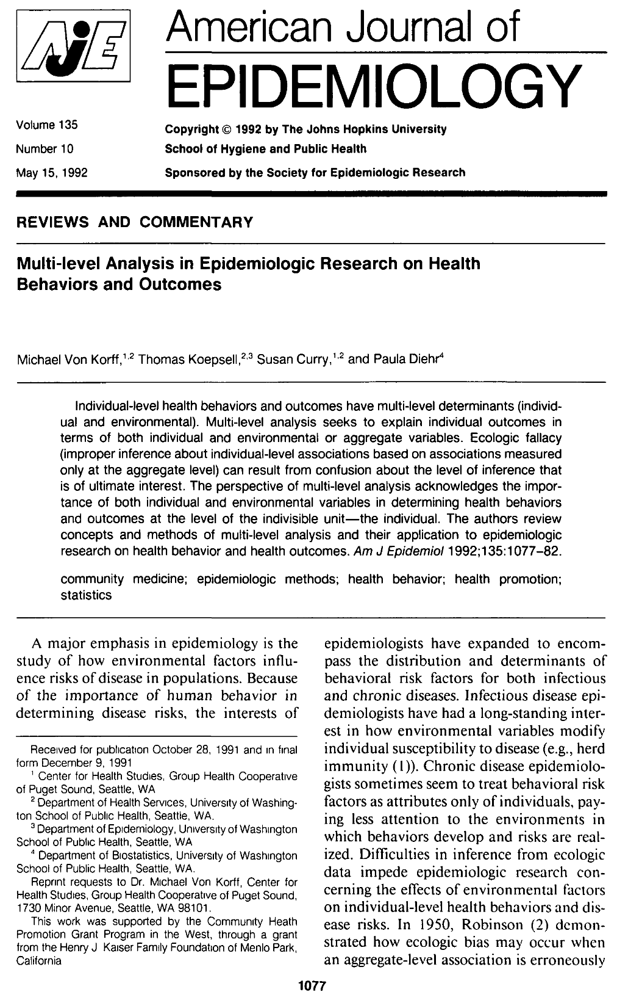
Epidemiology has lost its way
Social context and ‘population perspective’ has been forgotten.
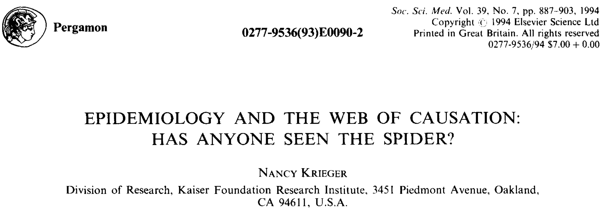
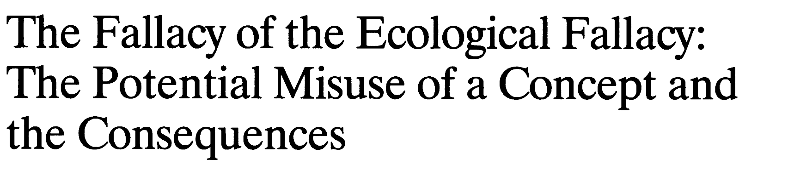
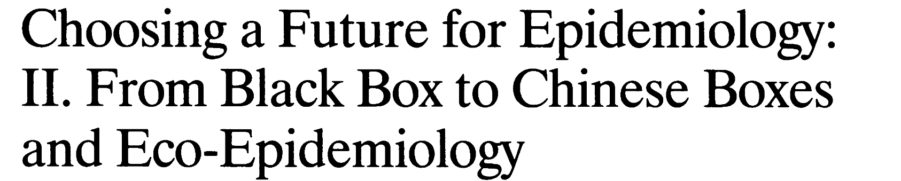
Failed trials, Inadequate explanations
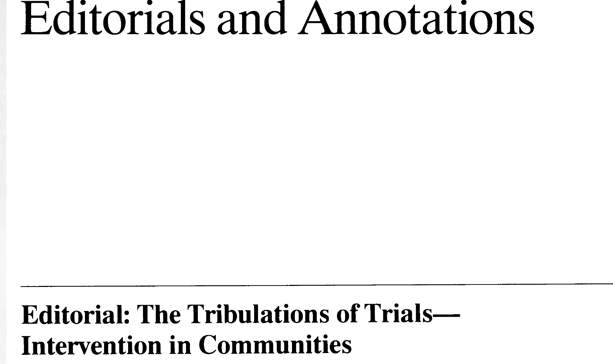Multilevel health determinants
Social context a crucial element of conceptual models for ‘social determinants of health’

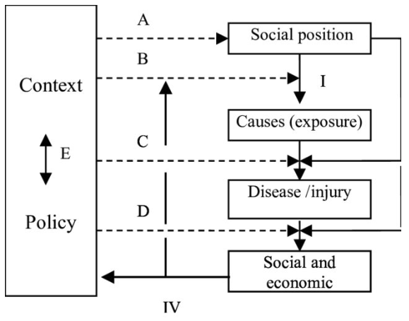
Act 1: The Big Idea
Early studies in social epidemiology
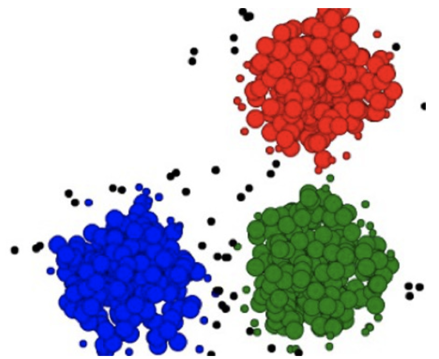
Neighborhood ‘effects’ on violence, mortality
- Focus on mutual adjustment
- Clustering as nuisance
Extended to CVD, low birthweight
- Random effects implementation
- Multi-level EMM
- Strong theory, field measurements, sophisticated models, potential mechanisms linked to violent crime.
Multilevel analyses showed that a measure of collective efficacy yields a high between-neighborhood reliability and is negatively associated with variations in violence, when individual-level characteristics, measurement error, and prior violence are controlled. Associations of concentrated disadvantage and residential instability with violence are largely mediated by collective efficacy.

Methods:
By incorporating multiple levels of determination in the study of individual outcomes, multilevel analysis allows for the effects of macro- and micro-level variables as well as their interactions
Potential:
Multilevel analysis is one way to begin to restore a population or societal dimension to epidemiologic research
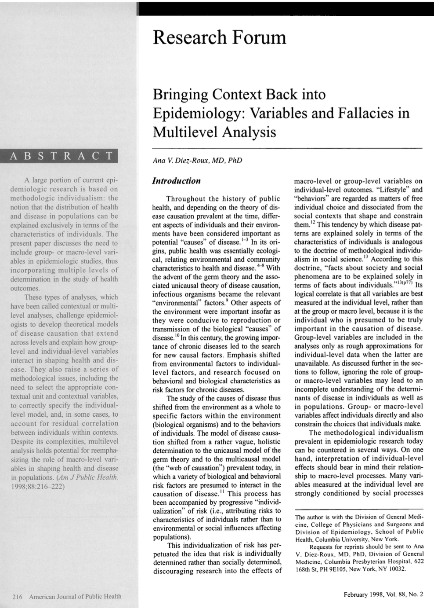
The ‘Big Idea’:
The big idea is that what matters in determining mortality and health in a society is less the overall wealth of that society and more how evenly wealth is distributed.
- Inequality = contextual.
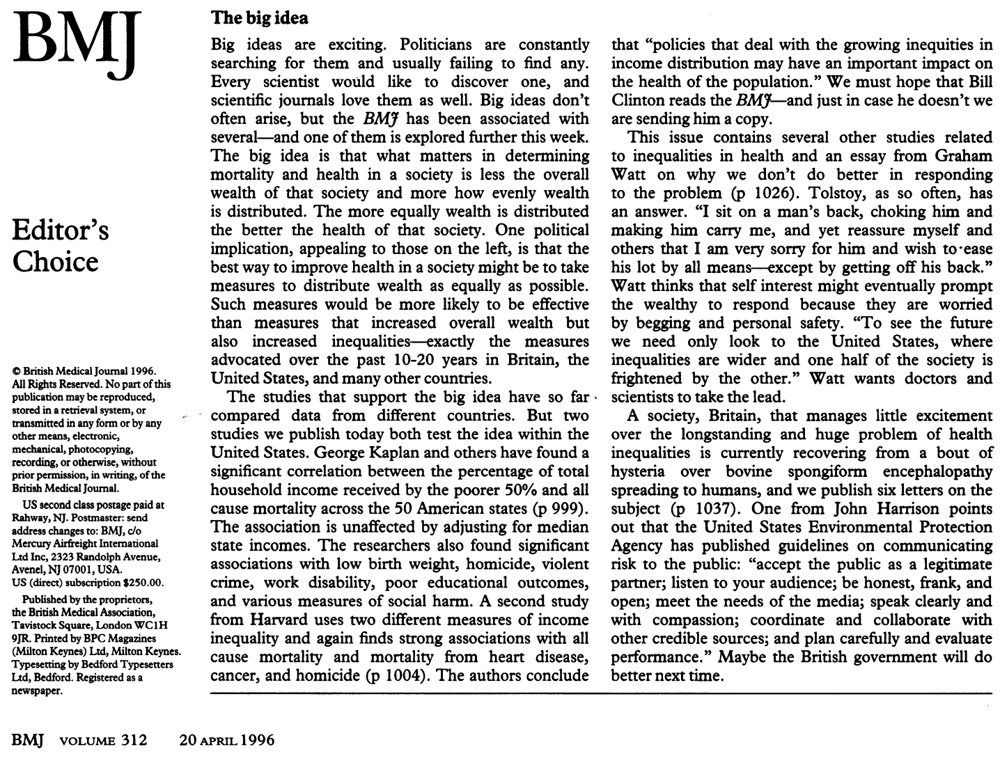
State of the Evidence: 2001
- 25 studies but only 10 used multilevel models
- Cited >1500 times
In 23 of the 25 studies we identified, researchers reported a statistically significant association between at least one neighbourhood measure of socioeconomic status and health, controlling for individual socioeconomic status.
serve the purpose of identifying types of geographical areas where traditional public health interventions, aimed at individual risk reduction, may best be targeted
Focus on variance partitioning


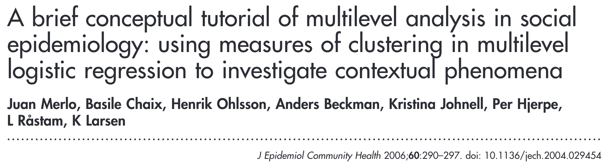
State of the evidence: 2010
Merlo (2003):
Traditional measures of association such as odds ratios thus provide an incomplete epidemiological basis for decision making in public health interventions.
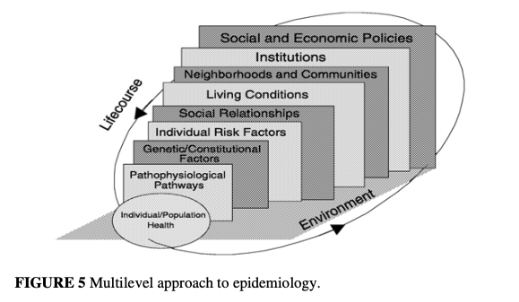
O’Campo (2003):
Perhaps the most pressing issue standing in the way of progress in multilevel research is lack of theory (i.e., system of hypotheses) on the mechanisms by which neighborhood environments affect health risks, protective factors, and outcomes.
Sharkey (2014):
We argue that the literature on context effects should be designed to provide theory and evidence on how this process works, and on the consequences for individuals’ and families’ lives and life chances.
Motivation
- Need to discuss what MLM were helping to ‘solve’
- ‘Simultaneous adjustment’
- Back to population perspective
- Consistency with conceptual models of social determinants
Act 2: A Crisis of Confidence?
A skeptical view
The recent and enthusiastic adoption of the multilevel model for neighborhood effects research appears to be a case of statisticism, a term used to describe an almost ritualistic appeal to significance testing and both sampling and measurement error when they are not the problem
What are the problems?
- Social stratification
- Endogeneity
- Extrapolation
- Spillovers
Responses

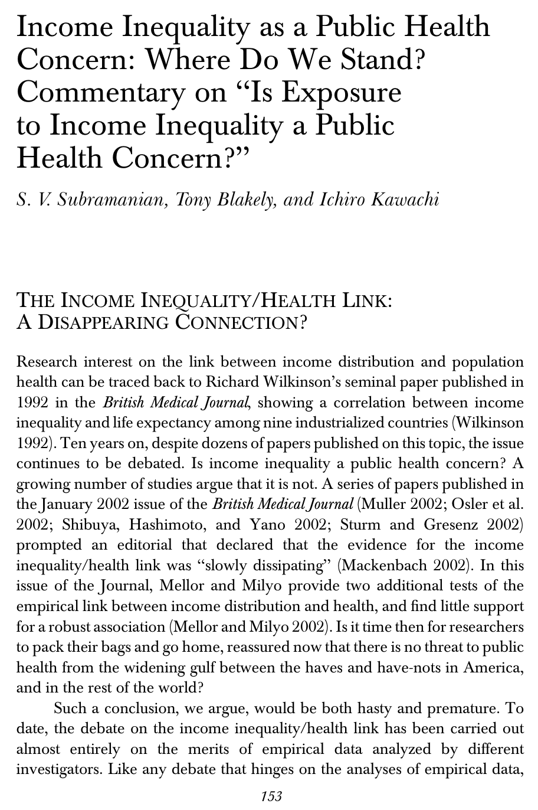
Neighborhood evidence to 2007
- 86 multilevel papers on neighborhoods
- 80% cross-sectional designs
- Inconsistencies within and across studies.


Neighborhood effects at 20 (2014)
“it is not clear how much we are learning, or whether such lessons are improving population health…experimental evidence of neighborhood effects is mixed, and observational studies too often report mere correlations, side-stepping critical effect identification issues. Since epidemiologists have long known that disadvantaged environments are not healthy, the utility of studies that do not face the difficult methodological challenges is questionable”
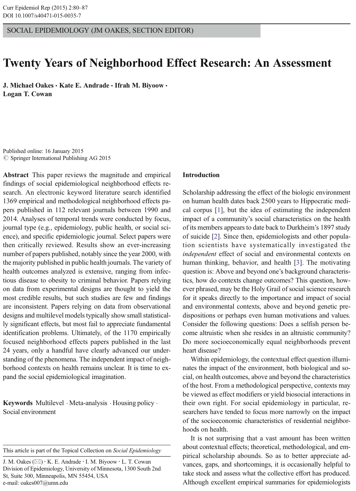
Galster and Sharkey (2017)

Act 3: A Way Forward?
Merging of multilevel and causal
- Sampson (2008)
- Nandi (2010)
- Concerns about ‘overadjustment’ in earlier work
- Weighting methods to deal with observables
Community interventions
- Branas
Epilogue: What have we learned?
Heterogeneous but reliably negative associations between adverse neighborhood conditions and health.
Random effects still dominate
Strong commitment to the idea of ‘neighborhood effects’, but we haven’t employed the right techniques to ‘reveal’ them.
Act I
Overview
- Text
Act 2: Are We There Yet?